折り紙でポチ袋作成！
step1
折り紙を裏返してダイヤモンド型に置く！

step2
１つ目の三角形を作る！
この時小指の爪ほどの隙間を作りましょう！
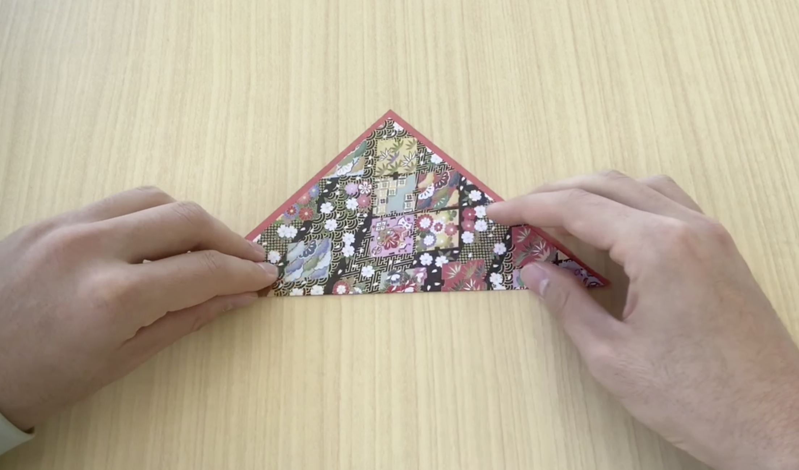step3
もう１度裏返して２つ目の三角形を作る！
上側の辺の中点の真ん中に来るようにしましょう！
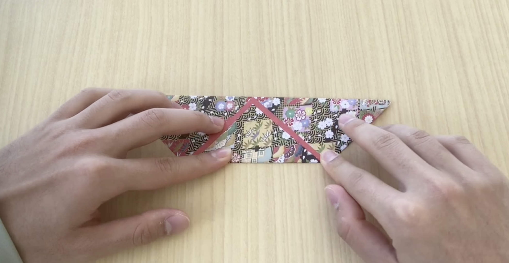step4
底辺に折り目をつけましょう！
１つ目の三角形で作った隙間の倍くらいが目安です！
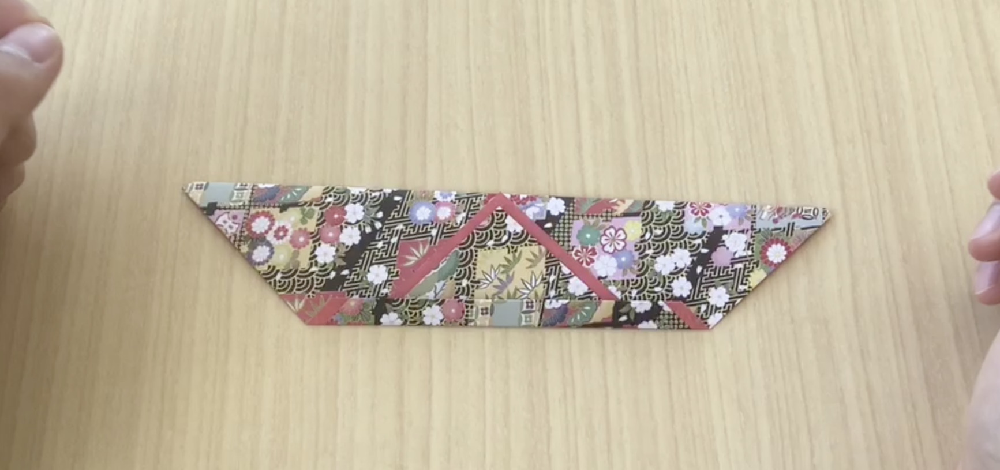step5
作った折り目から三角形を裏返します！
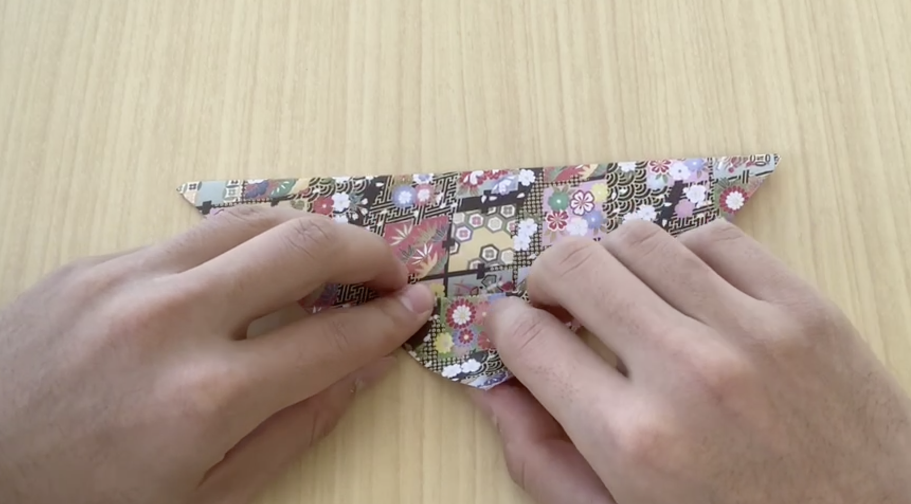step6
３つ目の三角形を作ります！
左の辺が２つ目の三角形の底辺と並行になるくらいにしましょう！
底辺を少し通り過ぎるくらいがちょうどいいです！
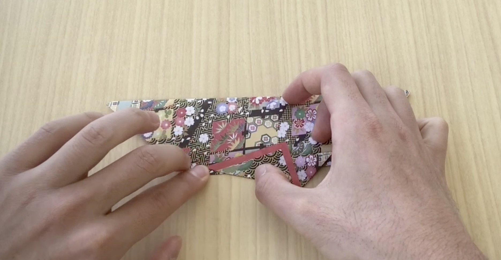step7
4つ目の三角形を作ります！
右側の頂点が３つ目の三角形の頂点より少し右側に来るように折りましょう！
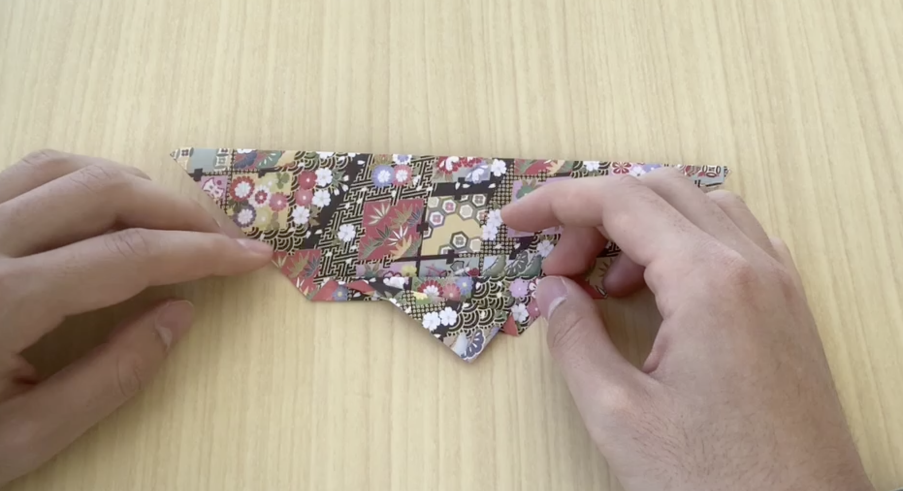step8
先ほど裏返した折り目を元に戻します！
３つ目と４つ目の三角形も一緒に動かしましょう！
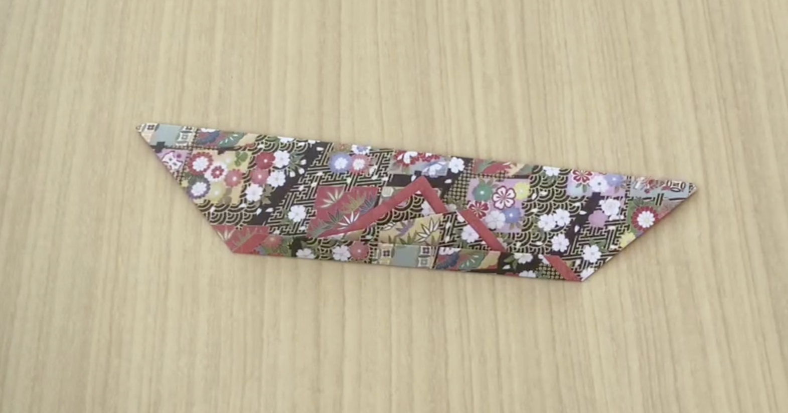step9
折り紙を縦向きにしてください！
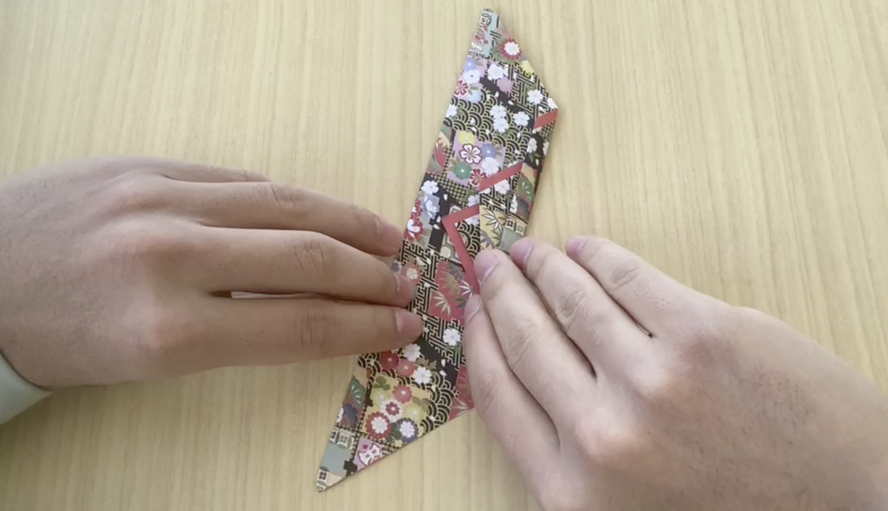step10
折り紙をが長方形になるように折ります！
３つ目の三角形の付け根の手前で折るのと丁度いいです！
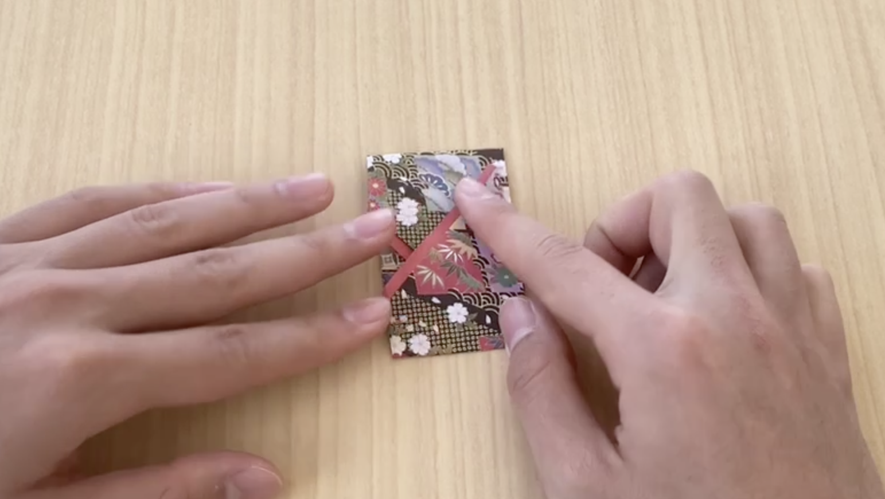step12
今折った二箇所戻して裏返します！
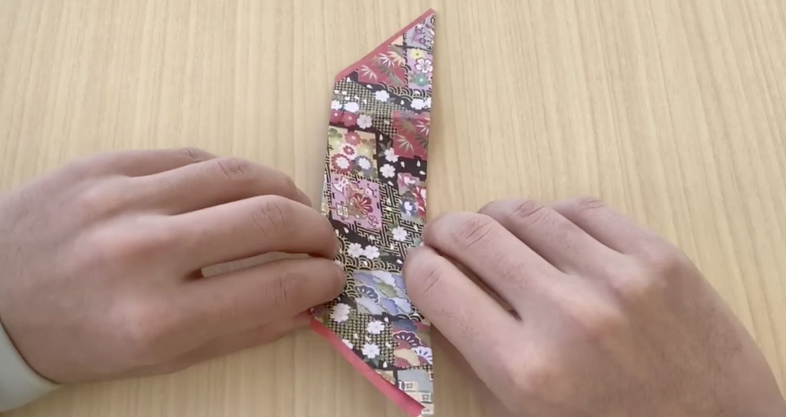step13
もう一度折って長方形にします！
片方の隙間にもう片方を入れます！
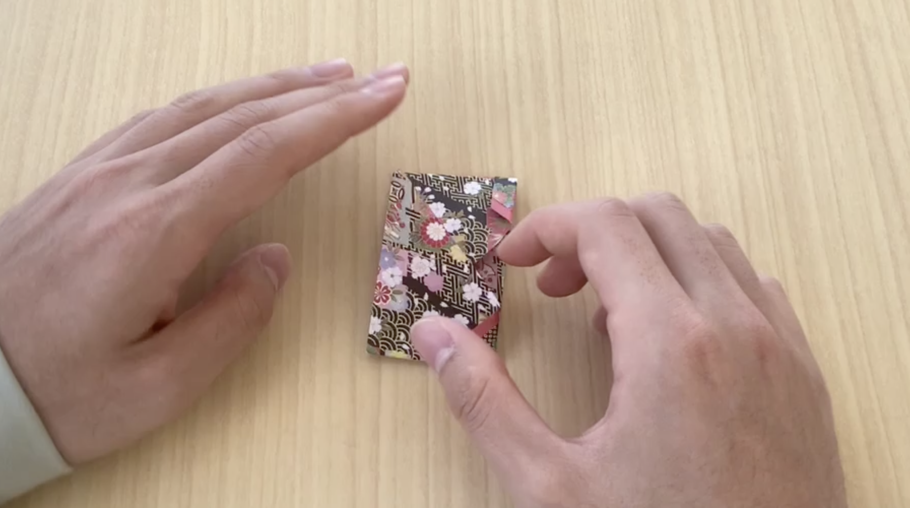